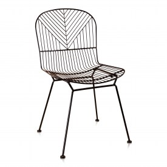
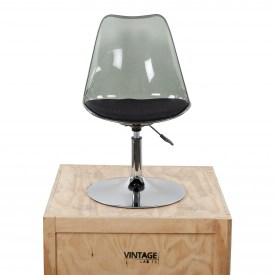

Bombay
Chaise de bar industrielle Bombay:Le siège en cuir n'est pas complétement fini,donnant aux chaises unjoli look vintage! Un designe cool que vous pouvez combiner avec,par exemple,une table en bois
89€

Kima Acier
Une belle chaise de fil d'acier avec un design lisse et solide.Sans pareil et un vrai eye-attachant à votre table.
89€

Peaky Blue
Lovely pour s'assoire et belle à regrder.Les chaises de table à manger ne devraient pas seluement être confortable;ils doivent aussi avoir l'air bien.Moderne et bien ajusté.
99€

Annabel
Chaise de salle à manger Annabel est une chaise avec une élégance intemporelle. Le siège et le dossier sont très doux donc cette chaise est assez confortable.
89€

V Bar
Une belle chaise de barre en acier avec un designe lisse et solide. Sans pareil et un vrai eyecather à votre table de barrel.
89€
Dezi
Une chaise Dezi ets un siège de fil très serré et peut être utilisé dans differents style d'intérieur.
89€
Tulip
Cette chaise design est contennue pour son siège en forme de tulipe spécifique. L'habitacle magnifiquement formé est équipé d'un coussin mau et donc trés confortable
89€

Bertoia
Chaise de salle à manger Bertoia noir.Chaise en fil d'un designe solide et élegant.
89€